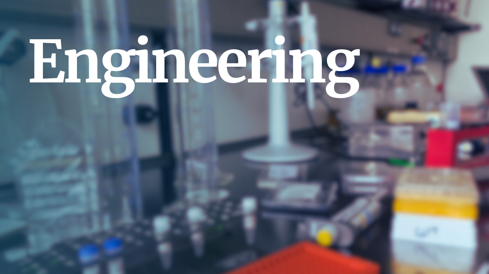
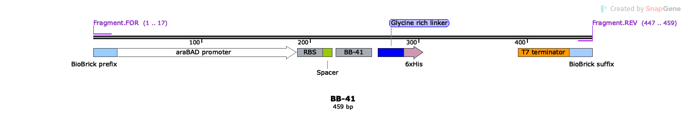
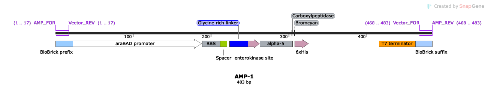
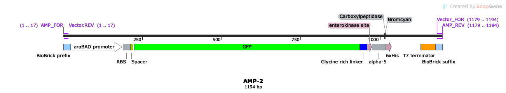
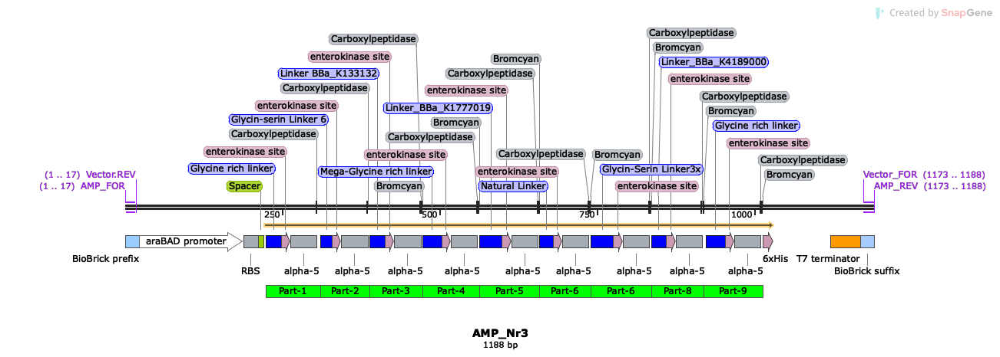
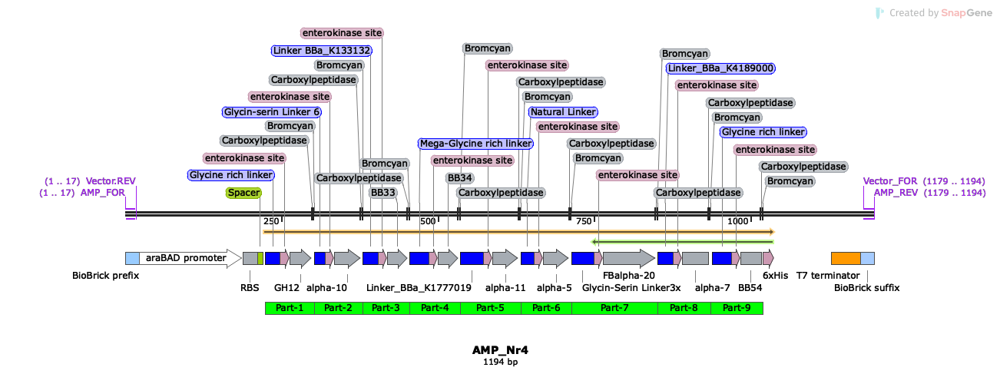

In our iGEM project, our goal was to disrupt existing biofilms, prevent their reformation, and suppress their growth using antimicrobial peptides (AMPs), enzymes, and lipids. To achieve this objective, we needed to investigate the efficacy of peptides, enzymes, and lipids in attacking and eradicating the biofilm. We initiated a literature search for the most prevalent strains according to existing literature and identified S. mutans as a promising target. S. mutans produces three distinct types of exopolysaccharides, leading us to choose three different enzymes to break down each type of exopolysaccharide. For the peptides, we sought those that specifically target S. mutans, and we found various papers highlighting different S. mutans-specific peptides. From these peptides, we selected α-5 and BB-41 due to their high specificity for attacking S. mutans and their low minimum inhibitory concentration (MIC).
Once we determined the enzymes and peptides for our project, we began devising a plan on how to work with them. Given the lack of prior work demonstrating peptide synthesis within cells by an iGEM team or other research groups, we aimed to experiment with this aspect in our project. In this Engineering Success section, we describe our thought process and intentions regarding the AMPs, focusing on their expression within cells and subsequent purification for utilization in our project.
To achieve this, we integrated AMP BB-41 into a DNA fragment containing a pBAD promoter, an efficient ribosome binding site from bacteriophage T7 gene 10 (Olins and Rangwala, 1989), a spacer, a glycine-serine-rich linker, a His tag, and a T7 terminator, as illustrated in Figure 1.

Upon successful cloning into the pBAD18 plasmid, we realized that the purification process and efficiency of the AMP will be challenging due to its deviation from the structure described in the literature. Our constructed fragment contains, in addition to the AMP BB-41, a glycine-serine-rich linker and a His tag, which change the length and amino acid sequence of our purified peptide. Consequently, we designed a new DNA construct containing the α-5 AMP. We selected α-5 due to its high specificity for S. mutans, similar to BB41, and its low MIC concentration. Furthermore, α-5 possesses an α-helical structure. We anticipated utilizing this property in the future to demonstrate successful peptide expression and proper folding by circular dichroism spectroscopy. In comparison to the DNA fragment for AMP BB-41, which we labelled as AMP-0, the DNA fragment for AMP α-5, denoted as AMP-1, included enterokinase, cyanogen bromide, and carboxypeptidase cleavage sites. After expression and purification using His-Tag affinity chromatography, the purified proteins were to be treated with enterokinase, removing all amino acids before the initial amino acid. Cyanogen bromide will remove all amino acids after methionine, leaving only methionine at the end of the desired AMP, as depicted in Figure 2. Carboxypeptidase A will remove methionine at the end of the wanted AMP, leaving the AMP in the desired size and sequence.

Concerned that the peptide might not be translated by the ribosomes, due to its small size, we designed a DNA fragment called AMP-2. It contains a GFP coding frame in addition to AMP-1. A glycine-serine linker was attached to the C-terminus of GFP, linked to enterokinase and AMP α-5, as shown in Figure 3. The concept behind this was that cells would initiate transcription and translation with GFP, subsequently transcribing and translating AMP α-5. Following transcription and translation, AMP-2 would be purified and treated similarly to AMP-1 to obtain the AMP.

After completing the cloning of AMP-1 and AMP-2, we contemplated ways to enhance our system. We noticed that cells with AMP-2 would transcribe and translate excessive amino acids that were unnecessary and decreases the AMP-yield. To address this, we explored whether we could improve the payload-to-load ratio by either increasing the length of the payload sequence (AMP sequence) or reducing the length of the load sequence (non-AMP sequence).
To enhance the payload-to-load ratio, we designed two new DNA fragments, AMP-3 and AMP-4. In both new DNA fragments, the open frame of GFP was replaced with AMPs. In the AMP-3 fragment, the open frame of GFP was replaced by an 8-fold linker-enterokinase site-α-5-cyanogen bromide site, aiming to improve the payload-to-load ratio from 5% to X%. In an ideal state, this alteration could potentially generate nine times more AMP α-5 compared to AMP-2, as illustrated in Figure 4. Considering the potential limitations of AMP-3 due to the repetitive nature of α-5 in the fragment we designed another DNA fragment. This fragment called AMP-4 contains nine different AMPs, as depicted in Figure 5. Our goal with AMP-4 was to produce not only one S. mutans-specific AMP but also numerous AMPs capable of killing S. mutans cells and potentially other organisms present in the biofilm, contributing to biofilm formation and caries development. We are aiming to improve the payload-to-load ratio from 5% to Y% with AMP-4.


Unfortunately, we were unable to clone AMP-3 and AMP-4. Nonetheless, we believe that our ideas lay the foundation for future iGEM teams as well as other research groups to demonstrate the ribosomal production of diverse AMPs, which could ultimately aid individuals facing various challenges.
© 2023 - Content on this site is licensed under a Creative Commons Attribution 4.0 International license.
The repository used to create this website is available at gitlab.igem.org/2023/stuttgart.